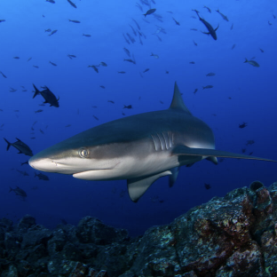

2 de octubre de 2025
Lo mas reciente
Como la politica descompuesta perjudica a los tribunales
Analizamos la difícil posición de los tribunales y jueces independientes en un momento en que los países de todo el mundo están profundamente divididos.
2 de octubre de 2025
Buscar
Palabra del día: extol
Esta palabra ha aparecido en 21 artículos en NYTimes.com en el último año. ¿Puedes usarla en una frase?
2 de octubre de 2025
Un científico mexicano sobrevive al mordisco de un tiburón en la cabeza
Desde un hospital en Costa Rica, Mauricio Hoyos, científico marino, dijo que lo operarían de la mandíbula luego de recibir puntos para cerrar heridas en el cuero cabelludo y pinchazos en la cara.

2 de octubre de 2025
Israel intercepta barcos que iban a Gaza con ayuda humanitaria
Las embarcaciones forman parte de una flotilla en la que viajan activistas, entre ellos Greta Thunberg, que intentan entregar ayuda humanitaria y protestar contra la guerra de Israel.
2 de octubre de 2025
Jane Goodall, primatóloga admirada, muere a los 91 años
Sus descubrimientos sobre cómo se comportaban los chimpancés en la naturaleza abrieron nuevos caminos de estudio y representaron lo que se denominó “uno de los grandes logros científicos del mundo occidental”.
Pagina 10 de 10
1
2
4
...
News
Home Page
U.S.
World
Politics
New York
Education
Sports
Business
Tech
Science
Weather
The Great Read
Obituaries
Headway
Visual Investigations
The Magazine
Arts
Book Review
Best Sellers Book List
Dance
Movies
Music
Pop Culture
Television
Theater
Visual Arts
Lifestyle
Health
Well
Food
Restaurant Reviews
Love
Travel
Style
Fashion
Real Estate
T Magazine
Opinion
Today's Opinion
Columnists
Editorials
Guest Essays
Op-Docs
Letters
Sunday Opinion
Opinion Video
Opinion Audio
More
Audio
Games
Cooking
Wirecutter
The Athletic
Jobs
Video
Graphics
Trending
Live Events
Corrections
Reader Center
TimesMachine
The Learning Network
School of The NYT
inEducation
Account
Subscribe
Manage My Account
Home Delivery
Gift Subscriptions
Group Subscriptions
Gift Articles
Email Newsletters
NYT Licensing
Replica Edition
Times Store